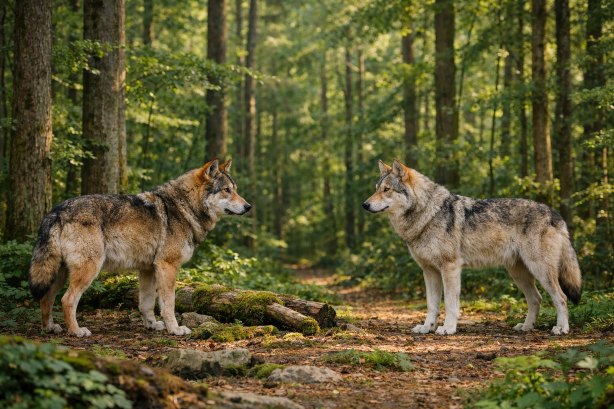

- Mapa odsyłaczy
- To element, który pozwala na zamieszczenie wielu linków na jednym obrazku. Potrzebne są do tego dwa znaczniki <map>, oraz <area>. Aby zamieścić zdjęcie na stronie, trzeba użyć tagu <img>, który łączy się z mapą za pomocą atrybutu usemap. Osyłacze mogą mieć kształt koła, prostokąta, punktu, lub dowolnego wielokąta.

Kod
1 <map name="przyklad">
2 <area href="animacje.html" shape="rect" coords="25,335,251,155">
3 <area href="a.html" shape="rect" coords="360,157,582,338">
4 </map>
5 <img src="img/Przyklad.png" usemap="#przyklad">
Jak to działa?
- Tworzymy mapę odsyłaczy o nazwie "przyklad"
- Tworzymy pierwszy obszar linku, który przenosi do strony map.html. Będzie miał kształt prostokąta, dlatego podajemy współrzędne dwóch końców jego przekątnej
- Tworzymy drugi odnośnik
- Po stworzeniu odnośników trzeba zamknąć tag <map>
- Na koniec dodajemy zdjęcie o nazwie "Przyklad.png" w folderze "img". Łączymy je z mapą odnośników za pomocą jej nazwy. Trzeba pamiętać o dodaniu znaku # przed wpisaniem nazwy mapy.